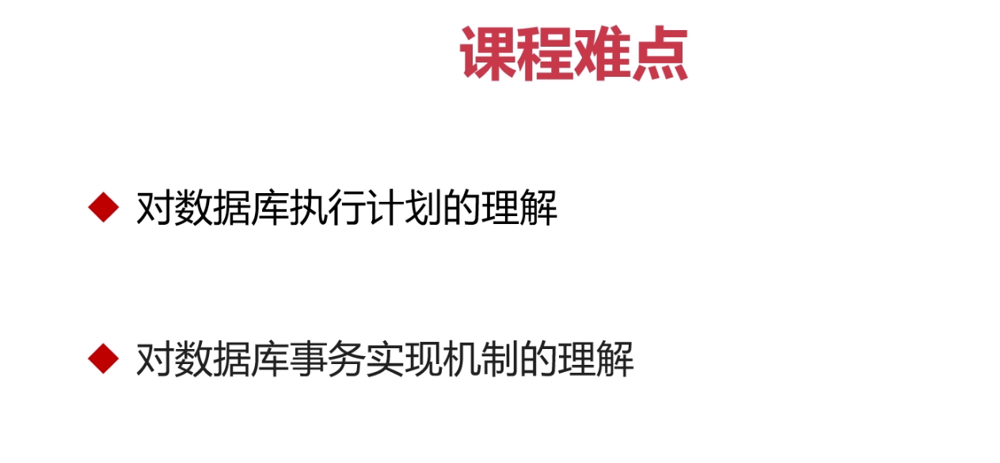
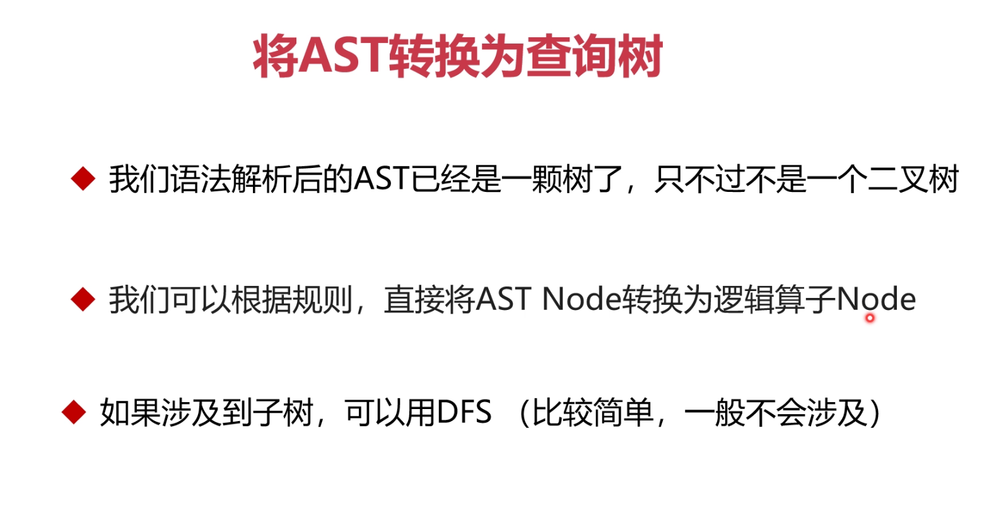

第1章 课程介绍及学习指南
第2章 手写数据库系统的必要性，及系统的整体介绍
2-1 为什么研究并实现一款数据库
2-2 我们希望设计一款怎样的数据库

2-3 如何快速实现原型，选择合适的语言

2-4 复杂项目的持续演进要点
2-5 学习提前挖掘和识别可能的工程难点
第3章 研究优秀架构，教你如何进行复杂的软件设计
3-1 手把手带你进行需求分析和架构设计
3-2 一起学习主流数据库架构，提升整体思维
3-3 深入了解数据库系统的各模块功能
3-4 如何设计好关键接口
3-5 代码实现：创建基本目录和模块
# imooc db
慕课网 - 自己动手做一款数据库
# 目录
- sql
- parser: 用于做sql语句的解析
- optimizer: 用于生成sql语句过程进行执行计划的优化
- executor: 执行引擎, 用于执行通过sql语句产生的具体执行计划
- operator: 执行算子, 是执行计划的最小单位
- storage: 存储引擎, 用于存储和组织数据
- transaction: 用于事务管理
- network: 网络通信模块
- common: 公共组件部分, 工具函数等
...
3-6 代码实现：实现基本接口
# 说明
该文档用于介绍各个模块之间的关键接口, 便于开发人员进行速查
这种将文档放入代码仓库中, 在业内的实践中也叫做 doc-as-code
# 交互接口介绍
- 数据库SQL语句的总入口: `exec_db_query(sql_stmt: str) -> Result` 用于接收用户的访问SQL, 协调数据库内各组件
- SQL引擎入口: `query_parse(sql_stmt: str) -> ASTNode` 用于解析SQL语句, 返回AST
- SQL引擎SQL优化过程的入口: `query_plan(ast: ASTNode) -> PlanTree` 用于将解析后的AST转换为具体的执行计划
- 执行引擎的入口: `exec_plan(plan_tree: PlanTree) -> Result` 用于将具体的执行计划执行, 并返回结果
第4章 学习SQL引擎，破解各种数据库优化的核心密码
4-1 深入学习SQL模块的原理
4-2 探索数据库SQL语句执行中的坑
4-3 了解编译原理，知道语句是如何变成执行计划的
4-4 代码实现：实现一个SQL语法解析器（一）
# imoocdb/sql/parser/parser.py
import sly # 语法解析
import re # 正则表达式
# select a,b from t1;
# select a,b from t1 where a>c;
# select a,b from t1 where a>c order by b;
# select a, count(a) from t1 group by a where b > 100;
class SQLLexer(sly.Lexer):
tokens = {
# DDL
CREATE, DROP,
DATABASE, TABLE, INDEX
# others
EXPLAN
# select
SELECT, STAR, FROM, WHERE, GROUP_BY, ORDER_BY,
JOIN,FULL,INNER,OUTER,LEFT,RIGHT,ON
}
# SQL语法解析器
业内如果是C/C++实现, 会套用bison, flex这些库来完成语法解析和词法解析过程
用于编译器的前端语法解析和词法解析部分, 涉及比较复杂的算法和数据结构, 因此我们也套用python的库
- sly
- ply
[sly的代码案例(计算器)](https://github.com/debeaz/sly)
4-5 代码实现：实现一个SQL语法解析器（二）
# imoocdb/sql/parser/parser.py
import sly # 语法解析
import re # 正则表达式
# select a,b from t1;
# select a,b from t1 where a>c;
# select a,b from t1 where a>c order by b;
# select a, count(a) from t1 group by a where b > 100;
class SQLLexer(sly.Lexer):
# 还可以ignore注释
ignore = '\t\n\r'
reflags = re.IGNORECASE
tokens = {
# DDL
CREATE, DROP,
DATABASE, TABLE, INDEX,
# others
EXPLAIN,
# select
SELECT, STAR, FROM, WHERE, GROUP_BY, ORDER_BY,
JOIN, FULL, INNER, OUTER, LEFT, RIGHT, ON,
# DML:
INSERT, DELETE, INTO, VALUES, UPDATE, SET,
# punctuation
DOT, COMMA, LPAREN, RPAREN,
# operators
EQ, NE, GT, GEQ, LT, LEQ,
AND, OR, NOT,
# data type
ID,
INTEGER, QUOTE_STRING, DQUOT_STRING, NULL,
}
# DDL
CREATE = 'CREATE',
DROP = 'DROP',
DATABASE = 'DATABASE',
TABLE = 'TABLE',
INDEX = 'INDEX'
# others
EXPLAIN = 'EXPLAIN',
# select
SELECT = 'SELECT',
STAR = r'\*',
FROM = 'FROM',
WHERE = 'WHERE',
GROUP_BY = 'GROUP BY',
ORDER_BY = 'ORDER BY',
JOIN = 'JOIN',
FULL = 'FULL'
INNER = 'INNER'
OUTER = 'OUTER'
LEFT = 'LEFT'
RIGHT = 'RIGHT'
ON = 'ON'
# DML:
INSERT = 'INSERT'
DELETE = 'DELETE'
INTO = 'INTO'
VALUES = 'VALUES'
UPDATE = 'UPDATE'
SET = 'SET'
# punctuation
DOT = r'\.'
COMMA = r'\,'
LPAREN = r'\('
RPAREN = r'\)'
# operators
EQ = r'='
NE = r'!='
GT = r'>'
GEQ = r'>='
LT = r'<'
LEQ = r'<='
AND = r'\bAND\b'
OR = r'\bOR\b'
NOT = r'\bNOT\b'
INTEGER=r'\d+'
# identify
@_(r'[a-zA-Z_][a-zA-Z_0-9]*')
def ID(self,t):
return t
QUOTE_STRING=r"'[^']*'"
DQUOT_STRING=r'"[^"]*"'
4-6 代码实现：实现一个SQL语法解析器（三）
# imoocdb/sql/parser/ast.py
class ASTNode:
def __init__(self):
pass
def __repr__(self):
# 类似 java tostring
fields = []
for k, v in self.__dict__.items():
# 下划线开头的认为是私有属性
if k.startswith('_'):
continue
fields.append(f'{k}={v}')
return f'<{self.__class__.__name__}> {" ".join(fields)}'
class Select(ASTNode):
def __init__(self, targets):
super().__init__()
self.targets = targets
self.from_table = None
# 下面这些子句(clause)也是继承astNode
self.where = None
self.group_by = None
self.order_by = None
# 如果需要更多, 可以继续扩展
# self.distinct=True
class OrderBy(ASTNode):
def __init__(self, column, direction):
super().__init__()
self.column = column
self.direction = direction
class JoinType:
LEFT_JOIN = 'LEFT JOIN'
RIGHT_JOIN = 'RIGHT JOIN'
INNER_JOIN = 'INNER JOIN'
FULL_JOIN = 'FULL JOIN'
CROSS_JOIN = 'CROSS JOIN' # 笛卡尔积
class Join(ASTNode):
def __init__(self, left, right, join_type: JoinType, condition=None):
super().__init__()
self.left = left
self.right = right
self.join_type = join_type
self.condition = condition
class Identifier(ASTNode):
def __init__(self, parts=None):
super().__init__()
self.parts = parts
class Star(ASTNode):
pass
class Constant(ASTNode):
def __init__(self, value=None):
super().__init__()
self.value = value
class Operation(ASTNode):
def __init__(self, op, args):
super().__init__()
self.op = op.lower() # todo: 可以进一步删除空格等
# 将args的值复制, 防止内部更改引起原数据不可知的变化
self.args = list(args)
class BinaryOperation(Operation):
pass
class FunctionOperation(Operation):
pass
# imoocdb/sql/parser/parser.py
import sly # 语法解析
import re # 正则表达式
# select a,b from t1;
# select a,b from t1 where a>c;
# select a,b from t1 where a>c order by b;
# select a, count(a) from t1 group by a where b > 100;
class SQLLexer(sly.Lexer):
# 还可以ignore注释
ignore = '\t\n\r'
reflags = re.IGNORECASE
tokens = {
# DDL
CREATE, DROP,
DATABASE, TABLE, INDEX,
# others
EXPLAIN,
# select
SELECT, STAR, FROM, WHERE, GROUP_BY, ORDER_BY,
JOIN, FULL, INNER, OUTER, LEFT, RIGHT, ON,
# DML:
INSERT, DELETE, INTO, VALUES, UPDATE, SET,
# punctuation
DOT, COMMA, LPAREN, RPAREN,
# operators
EQ, NE, GT, GEQ, LT, LEQ,
AND, OR, NOT,
# data type
ID,
INTEGER, QUOTE_STRING, DQUOT_STRING, NULL,
}
# DDL
CREATE = 'CREATE',
DROP = 'DROP',
DATABASE = 'DATABASE',
TABLE = 'TABLE',
INDEX = 'INDEX'
# others
EXPLAIN = 'EXPLAIN',
# select
SELECT = 'SELECT',
STAR = r'\*',
FROM = 'FROM',
WHERE = 'WHERE',
GROUP_BY = 'GROUP BY',
ORDER_BY = 'ORDER BY',
JOIN = 'JOIN',
FULL = 'FULL'
INNER = 'INNER'
OUTER = 'OUTER'
LEFT = 'LEFT'
RIGHT = 'RIGHT'
ON = 'ON'
# DML:
INSERT = 'INSERT'
DELETE = 'DELETE'
INTO = 'INTO'
VALUES = 'VALUES'
UPDATE = 'UPDATE'
SET = 'SET'
# punctuation
DOT = r'\.'
COMMA = r'\,'
LPAREN = r'\('
RPAREN = r'\)'
# operators
EQ = r'='
NE = r'!='
GT = r'>'
GEQ = r'>='
LT = r'<'
LEQ = r'<='
AND = r'\bAND\b'
OR = r'\bOR\b'
NOT = r'\bNOT\b'
INTEGER=r'\d+'
# identify
@_(r'[a-zA-Z_][a-zA-Z_0-9]*')
def ID(self,t):
return t
QUOTE_STRING=r"'[^']*'"
DQUOT_STRING=r'"[^"]*"'
4-7 代码实现：实现一个SQL语法解析器（四）
# imoocdb/sql/parser/parser.py
from .ast import Select, Star
class SQLParser(sly.Parser):
# select *; -> Select([Star()])
@_('SELECT target_columns')
def select(self, p):
return Select(targets=p.target_columns)
# 递归
@_('target_columns COMMA target_column')
def target_columns(self, p):
p.target_columns.append(p.target_column)
@_('target_column')
def target_column(self, p):
return [p.target_column]
@_('star')
def target_column(self, p):
return p.star
@_('STAR')
def star(self,p):
return Star()
@_('expr', 'function')
def target_column(self, p):
return p.p[0]
@_('')
def expr(self, p):
pass
4-8 代码实现：完善增删查改语句的逻辑（一）
# imoocdb/sql/parser/parser.py
import sly # 语法解析
import re # 正则表达式
# select a,b from t1;
# select a,b from t1 where a>c;
# select a,b from t1 where a>c order by b;
# select a, count(a) from t1 group by a where b > 100;
class SQLLexer(sly.Lexer):
ignore = ' \t\n\r'
reflags = re.IGNORECASE
tokens = {
# DDL
CREATE, DROP,
DATABASE, TABLE, INDEX,
# others
EXPLAIN,
# select
SELECT, STAR, FROM, WHERE, GROUP_BY, ORDER_BY, ASC, DESC,
JOIN, FULL, INNER, OUTER, LEFT, RIGHT, ON,
# DML: INSERT, UPDATE, DELETE
INSERT, DELETE, INTO, VALUES, UPDATE, SET,
# punctuation
DOT, COMMA, LPAREN, RPAREN,
# operators
EQ, NE, GT, GEQ, LT, LEQ,
AND, OR, NOT,
# data type
ID,
INTEGER, QUOTE_STRING, DQUOTE_STRING, NULL,
# command
CHECKPOINT, SHOW
}
CREATE = 'CREATE'
DROP = 'DROP'
DATABASE = 'DATABASE'
TABLE = 'TABLE'
INDEX = 'INDEX'
# others
EXPLAIN = 'EXPLAIN'
# select
SELECT = 'SELECT'
STAR = r'\*'
FROM = 'FROM'
WHERE = 'WHERE'
GROUP_BY = 'GROUP BY'
ORDER_BY = 'ORDER BY'
ASC = 'ASC'
DESC = 'DESC'
JOIN = 'JOIN'
FULL = 'FULL'
INNER = 'INNER'
OUTER = 'OUTER'
LEFT = 'LEFT'
RIGHT = 'RIGHT'
ON = 'ON'
# DML: INSERT, UPDATE, DELETE
INSERT = 'INSERT'
DELETE = 'DELETE'
INTO = 'INTO'
VALUES = 'VALUES'
UPDATE = 'UPDATE'
SET = 'SET'
# command
CHECKPOINT = 'CHECKPOINT'
SHOW = 'SHOW'
# punctuation
DOT = r'\.'
COMMA = r','
LPAREN = r'\('
RPAREN = r'\)'
# operators
EQ = r'='
NE = r'!='
GT = r'>'
GEQ = r'>='
LT = r'<'
LEQ = r'<='
AND = r'\bAND\b'
OR = r'\bOR\b'
NOT = r'\bNOT\b'
INTEGER = r'\d+'
@_(r'[a-zA-Z_][a-zA-Z0-9_\.]*')
def ID(self, t):
return t
QUOTE_STRING = r"'[^']*'"
DQUOTE_STRING = r'"[^"]*"'
# from .ast import *
from imoocdb.sql.parser.ast import *
class SQLParser(sly.Parser):
tokens = SQLLexer.tokens
# main entrance
# 保证入口点的单一
@_('select',
'update',
'insert',
'delete',
'create_table',
'create_index',
'command')
def query(self, p):
return p[0]
# command 解析
@_('CHECKPOINT',
'SHOW expr_list')
def command(self, p):
if len(p) > 1:
return Command(p[0], p[1])
else:
return Command(p[0])
# select * ...; -> Select([Star()]) ...
@_('SELECT target_columns')
def select(self, p):
return Select(targets=p.target_columns)
@_('target_columns COMMA target_column')
def target_columns(self, p):
p.target_columns.append(p.target_column)
return p.target_columns
@_('target_column')
def target_columns(self, p):
return [p.target_column]
@_('star')
def target_column(self, p):
return p.star
@_('STAR')
def star(self, p):
return Star()
@_('expr',
'function')
def target_column(self, p):
return p[0]
# ===== 上面是，带领大家一起实现的部分 =====
# ===== 由于时间关系，下面是补充其他类似的部分 ====
@_('id LPAREN expr_list_or_nothing RPAREN')
def function(self, p):
args = p.expr_list_or_nothing
if not args:
args = []
return FunctionOperation(op=p.id, args=args)
# from 子句
@_('select FROM from_table',
'select FROM cross_join_tables',
'select FROM join_tables')
def select(self, p):
select = p.select
if select.from_table:
raise SyntaxError('duplicated from clause.')
select.from_table = p[2]
return select
@_('identifier')
def from_table(self, p):
return p.identifier
# where 子句
@_('select WHERE expr')
def select(self, p):
select = p.select
if select.where:
raise SyntaxError('duplicated where clause.')
if not select.from_table:
raise SyntaxError('not set from clause.')
where_expr = p.expr
if not isinstance(where_expr, Operation):
raise SyntaxError(
f"Require an operation for WHERE clause.")
select.where = where_expr
return select
# order by 子句
@_('select ORDER_BY ordering_term')
def select(self, p):
select = p.select
if select.order_by:
raise SyntaxError('duplicated order by clause.')
if not select.from_table:
raise SyntaxError('not set from clause.')
select.order_by = p.ordering_term
return select
@_('identifier DESC')
def ordering_term(self, p):
return OrderBy(column=p.identifier, direction='DESC')
@_('identifier',
'identifier ASC')
def ordering_term(self, p):
return OrderBy(column=p.identifier, direction='ASC')
# Group by 子句
@_('select GROUP_BY expr_list')
def select(self, p):
select = p.select
if select.group_by:
raise SyntaxError('duplicated group by clause.')
if not select.from_table:
raise SyntaxError('not set from clause.')
group_by = p.expr_list
if not isinstance(group_by, list):
group_by = [group_by]
select.group_by = group_by
return select
# Join 子句
# 提示：3.11 课后修复该处bug, 语法解析中缺乏ON关键字
@_('from_table join_clause from_table ON expr')
def join_tables(self, p):
return Join(left=p[0],
right=p[2],
join_type=p.join_clause,
condition=p.expr)
@_(JoinType.LEFT_JOIN,
JoinType.RIGHT_JOIN,
JoinType.INNER_JOIN,
JoinType.FULL_JOIN,
)
def join_clause(self, p):
return f'{p[0]} {p[1]}'
# 也是隐式的join类型，如 select * from t1, t2;
@_('from_table COMMA from_table')
def cross_join_tables(self, p):
return Join(left=p[0],
right=p[2],
join_type=JoinType.CROSS_JOIN)
# 二元表达式
@_('expr EQ expr',
'expr NE expr',
'expr GEQ expr',
'expr GT expr',
'expr LEQ expr',
'expr LT expr',
'expr AND expr',
'expr OR expr', )
def expr(self, p):
return BinaryOperation(op=p[1], args=(p.expr0, p.expr1))
# 表达式
@_('expr_list')
def expr_list_or_nothing(self, p):
return p.expr_list
@_('enum')
def expr_list(self, p):
return p.enum
@_('expr')
def expr_list(self, p):
return [p.expr]
@_('enum COMMA expr')
def enum(self, p):
return p.enum + [p.expr]
@_('expr COMMA expr')
def enum(self, p):
return [p.expr0, p.expr1]
@_('identifier')
def expr(self, p):
return p.identifier
@_('constant')
def expr(self, p):
return p.constant
# 常量的规则
@_('NULL')
def constant(self, p):
return Constant(value=None)
@_('integer')
def constant(self, p):
return Constant(value=int(p.integer))
@_('string')
def constant(self, p):
return Constant(value=str(p[0]))
@_('identifier DOT identifier')
def identifier(self, p):
p.identifier0.parts += p.identifier1.parts
return p.identifier0
@_('id')
def identifier(self, p):
return Identifier(p[0])
@_('ID')
def id(self, p):
return p[0]
@_('quote_string',
'dquote_string')
def string(self, p):
return p[0]
@_('INTEGER')
def integer(self, p):
return int(p[0])
@_('QUOTE_STRING')
def quote_string(self, p):
return p[0].strip('\'')
@_('DQUOTE_STRING')
def dquote_string(self, p):
return p[0].strip('\"')
@_('')
def empty(self, p):
pass
# update 语句的规则实现
@_('UPDATE identifier SET update_parameter_list',
'UPDATE identifier SET update_parameter_list WHERE expr')
def update(self, p):
where = getattr(p, 'expr', None)
return Update(
table=p.identifier,
columns=p.update_parameter_list,
where=where
)
# update t1 set a = 1, b = 2, ...
@_('update_parameter', # 可以透传到该规则上
'update_parameter_list COMMA update_parameter')
def update_parameter_list(self, p):
params = getattr(p, 'update_parameter_list', {})
params.update(p.update_parameter)
return params
# update t1 set a = 1;
@_('expr EQ expr')
def update_parameter(self, p):
return {p.expr0: p.expr1}
# delete 语句
@_('DELETE FROM from_table WHERE expr',
'DELETE FROM from_table')
def delete(self, p):
where = getattr(p, 'expr', None)
if where and not isinstance(where, Operation):
raise SyntaxError(
f"WHERE clause must contain boolean condition not: {str(where)}")
return Delete(table=p.from_table, where=where)
# insert 语句
@_('INSERT INTO from_table LPAREN target_columns RPAREN VALUES expr_list_set',
'INSERT INTO from_table VALUES expr_list_set')
def insert(self, p):
columns = getattr(p, 'target_columns', None)
return Insert(table=p.from_table, columns=columns, values=p.expr_list_set)
@_('expr_list_set COMMA expr_list_set')
def expr_list_set(self, p):
return p.expr_list_set0 + p.expr_list_set1
@_('LPAREN expr_list RPAREN')
def expr_list_set(self, p):
return [p.expr_list]
# DDL
# create table
# e.g., CREATE TABLE t1 (id int, name text, gender int)
@_('defined_columns COMMA defined_column')
def defined_columns(self, p):
p.defined_columns.append(p.defined_column)
return p.defined_columns
@_('defined_column')
def defined_columns(self, p):
return [p.defined_column]
@_('id id')
def defined_column(self, p):
return [p.id0, p.id1]
@_('CREATE TABLE identifier LPAREN defined_columns RPAREN')
def create_table(self, p):
return CreateTable(p.identifier, p.defined_columns)
@_('CREATE INDEX identifier ON identifier LPAREN target_columns RPAREN')
def create_index(self, p):
return CreateIndex(
index=p.identifier0, table=p.identifier1,
columns=p.target_columns
)
def error(self, p):
if p:
raise SyntaxError(f'Syntax error at token {p.type}: "{p.value}".')
else:
raise SyntaxError("Syntax error at end of file.")
def query_parse(sql_stmt):
lexer = SQLLexer()
parser = SQLParser()
tokens = lexer.tokenize(sql_stmt)
return parser.parse(tokens)
# stmts = [
# 'select a,b from t1',
# 'select a,b from t1 where a > c',
# 'select a,b from t1 where a > c order by b',
# 'select a,count(a) from t1 group by a where b > 100'
# ]
#
# for stmt in stmts:
# print(query_parse(stmt))
# imoocdb/tests/test_sql_parser.py
from imoocdb.sql.parser.parser import query_parse
def test_parse_select_stmt():
ast = query_parse('select a,b from t1')
assert str(ast)=='<Select> targets=[<Identifier> parts=a, <Identifier> parts=b] from_table=<Identifier> parts=t1 where=None group_by=None order_by=None'
try:
query_parse('select a,b from t1 order by b order by a')
except SyntaxError:
pass
else:
raise AssertionError('should raise an exception')
test_parse_select_stmt()
4-9 代码实现：完善增删查改语句的逻辑（二）
# imoocdb/tests/test_sql_parser.py
from imoocdb.sql.parser.parser import query_parse
def test_parse_select_stmt():
ast = query_parse('select a,b from t1')
assert str(
ast) == '<Select> targets=[<Identifier> parts=a, <Identifier> parts=b] from_table=<Identifier> parts=t1 where=None group_by=None order_by=None'
try:
query_parse('select a,b from t1 order by b order by a')
except SyntaxError:
pass
else:
raise AssertionError('should raise an exception')
test_parse_select_stmt()
def test_parse_dml_stmt():
ast = query_parse('update t1 set a = 1')
print(ast)
test_parse_dml_stmt()
# imoocdb/sql/parser/ast.py
# ...
class Update(ASTNode):
def __init__(self, table, columns, where):
super().__init__()
# update t1 set a=1 where b>100;
self.table = table
# 期望column是字典(set x=x)
assert isinstance(columns, dict)
self.columns = columns
self.where = where
4-10 我们的产品应该支持哪些功能
4-11 如何把语法树变成查询树
